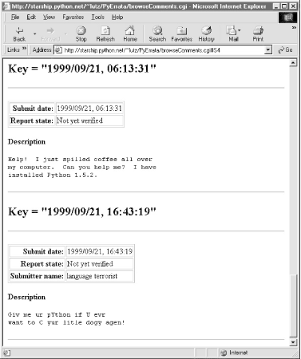

| I l@ve RuBoard |
|
14.4 Browsing PyErrata ReportsOn to the first major system function: browsing report records. Before we study the code used to program browse operations, let's get a handle on the sort of user interaction it is designed to produce. If you're the sort that prefers to jump into code right away, it's okay to skip the next two sections for now, but be sure to come back here to refer to the screen shots as you study code listed later. 14.4.1 User Interface: Browsing Comment ReportsAs shown in Figure 14-2, PyErrata lets us browse and submit two kinds of reports: general comments and errata (bug) reports. Clicking the "General comments" link in the Browse section of the root page brings up the page shown in Figure 14-3. Figure 14-3. Browse comments, selection pageNow, the first thing you should know about PyErrata's browse feature is that it allows users to query and view the report database in multiple ways. Reports may be ordered by any report field and displayed in three different formats. The top-level browse pages essentially serve to configure a query against the report database and the presentation of its result. To specify an ordering, first select a sort criterion: a report field name by which report listings are ordered. Fields take the form of radio buttons on this page. To specify a report display format, select one of three option buttons:
Figure 14-4 shows the simple case produced by clicking the "Submit date" sort key button, selecting the "Simple list" display option, and pressing the Submit Query button to contact a Python script on the server. It's a scrollable list of all comment reports in the database ordered by submission date. Figure 14-4. Browse comments, "Simple list" optionIn all query results, each record is displayed as a table of attribute field values (as many as are present in the record) followed by the text of the record's description field. The description is typically multiple lines long, so it's shown separately and without any HTML reformatting (i.e., as originally typed). If there are multiple records in a list, they are separated by horizontal lines. Simple lists like this work well for small databases, but the other two display options are better suited to larger report sets. For instance, if we instead pick the "With index" option, we are served up a page that begins with a list of links to other locations in the page, followed by a list of records ordered and grouped by a sort key's value. Figure 14-5 shows the "With index" option being used with the "Report state" sort key. Figure 14-5. Browse comments, "With index" optionTo view reports, the user can either scroll through the list or click on one of the links at the top; they follow in-page hyperlinks to sections of the report list where a given key value's records begin. Internally, these hyperlinks use file.html#section section-link syntax that is supported by most browsers, and in-page tags. The important parts of the generated HTML code look like this: <title>PP2E Comment list</title> <h1>Comment list, sorted by "Report state"</h1><hr> <h2>Index</h2><ul> <li><a href="#S0">Not yet verified</a> <li><a href="#S1">Rejected - not a real bug</a> <li><a href="#S2">Verified by author</a> </ul><hr> <h2><a name="#S0">Key = "Not yet verified"</a></h2><hr> <p><table border> <tr><th align=right>Submit date:<td>1999/09/21, 06:07:43 ...more... Figure 14-6 shows the result of clicking one such link in a page sorted instead by submit date. Notice the #S4 at the end of the result's URL. We'll see how these tags are automatically generated in a moment. Figure 14-6. Browse comments, "With index" listingFor very large databases, it may be impractical to list every record's contents on the same page; the third PyErrata display format option provides a solution. Figure 14-7 shows the page produced by the "Index only" display option, with "Submit date" chosen for report order. There are no records on this page, just a list of hyperlinks that "know" how to fetch records with the listed key value when clicked. They are another example of what we've termed smart links -- they embed key and value information in the hyperlink's URL. Figure 14-7. Browse comments, "Index only" selection listPyErrata generates these links dynamically; they look like the following, except that I've added line-feeds to make them more readable in this book: <title>PP2E Comment list</title>
<h1>Comment list, sorted by "Submit date"</h1><hr>
<h2>Index</h2><ul>
<li><a href="index.cgi?kind=Comment&
sortkey=Submit+date&
value=1999/09/21,+06%3a06%3a50">1999/09/21, 06:06:50</a>
<li><a href="index.cgi?kind=Comment&
sortkey=Submit+date&
value=1999/09/21,+06%3a07%3a22">1999/09/21, 06:07:22</a>
...more...
</ul><hr>
Note the URL-encoded parameters in the links this time; as you'll see in the code, this is Python's urllib module at work again. Also notice that unlike the last chapter's PyMailCgi example, PyErrata generates minimal URLs in lists (without server and path names -- they are inferred and added by the browser from the prior page's address). If you view the generated page's source code, the underlying smart links are more obvious; Figure 14-8 shows one such index page's code.[2]
Figure 14-8. PyErrata generated links codeClicking on a link in the "Index only" page fetches and displays all records in the database with the displayed value in the displayed key field. For instance, pressing the second to last link in the index page (Figure 14-7) yields the page shown in Figure 14-9. As usual, generated links appear in the address field of the result. Figure 14-9. Browse comments, "Index only" link clickedIf we ask for an index based on field "Submitter name," we generate similar results but with different key values in the list and URLs; Figure 14-10 shows the result of clicking such an index page link. This is the same record as Figure 14-9, but was accessed via name key, not submit date. By treating records generically, PyErrata provides multiple ways to view and access stored data. Figure 14-10. Browse comments, "Index only" page14.4.2 User Interface: Browsing Errata ReportsPyErrata maintains two distinct databases -- one for general comments and one for genuine error reports. To PyErrata, records are just objects with fields; it treats both comments and errata the same, and is happy to use whatever database it is passed. Because of that, the interface for browsing errata records is almost identical to that for comments, and as we'll see in the implementation section, it largely uses the same code. Errata reports differ, though, in the fields they contain. Because there are many more fields that can be filled out here, the root page of the errata browse function is slightly different. As seen in Figure 14-11, sort fields are selected from a pull-down selection list rather than radiobuttons. Every attribute of an errata report can be used as a sort key, even if some reports have no value for the field selected. Most fields are optional; as we'll see later, reports with empty field values are shown as value ? in index lists and grouped under value (none) in report lists. Figure 14-11. Browse errata, selection pageOnce we've picked a sort order and display format and submitted our query, things look much the same as for comments (albeit with labels that say Errata instead of Comment). For instance, Figure 14-12 shows the "With index" option for errata sorted by submit date. Figure 14-12. Browse errata, "With index" displayClicking one of the links on this page leads to a section of the report page list, as in Figure 14-13; again, the URL at the top uses #section hyperlinks. Figure 14-13. Browse errata, report listThe "Index only" mode works the same here too: Figure 14-14 shows the index page for sort field "Chapter number". Notice the "?" entry; if clicked, it will fetch and display all records with an empty chapter number field. In the display, their empty key values print as (none). In the database, it's really an empty string. Figure 14-14. Browse errata, "Index only" link pageClicking on the "16" entry brings up all errata tagged with that chapter number in the database; Figure 14-15 shows that only one was found this time. Figure 14-15. Browse errata, "Index only" link clicked14.4.3 Using Explicit URLs with PyErrataBecause Python's cgi module treats form inputs and URL parameters the same way, you can also use explicit URLs to generate most of the pages shown so far. In fact, PyErrata does too; the URL shown at the top of Figure 14-15: http://starship.python.net/~lutz/
PyErrata/index.cgi?kind=Errata&sortkey=Chapter+number&value=16
was generated by PyErrata internally to represent a query to be sent to the next script (mostly -- the browser actually adds the first part, through PyErrata/ ). But there's nothing preventing a user (or another script) from submitting that fully specified URL explicitly to trigger a query and reply. Other pages can be fetched with direct URLs too; this one loads the index page itself: http://starship.python.net/~lutz/
PyErrata/browseErrata.cgi?key=Chapter+number&display=indexonly
Likewise, if you want to query the system for all comments submitted under a given name, you can either navigate through the system's query pages, or type a URL like this: http://starship.python.net/~lutz/
PyErrata/index.cgi?kind=Comment&sortkey=Submitter+name&value=Bob
You'll get a page with Python exception information if there are no matches for the key and value in the specified database. If you instead just want to fetch a comment list sorted by submit dates (e.g., to parse in another script), type this: http://starship.python.net/~lutz/
PyErrata/browseComments.cgi?key=Submit+date&display=list
If you access this system outside the scope of its form pages like this, be sure to specify a complete URL and URL-encoded parameter values. There is no notion of a prior page, and because most key values originate from values in user-provided reports, they may contain arbitrary characters. It's also possible to use explicit URLs to submit new reports -- each field may be passed as a URL's parameter to the submit script: http://starship.python.net/~lutz/
PyErrata/submitComment.cgi?Description=spam&Submitter+name=Bob
but we won't truly understand what this does until we reach Section 14.5 later in this chapter. 14.4.4 Implementation: Browsing Comment ReportsOkay, now that we've seen the external behavior of the browse function, let's roll up our sleeves and dig into its implementation. The following sections list and discuss the source code files that implement PyErrata browse operations. All of these live on the web server; some are static HTML files and others are executable Python scripts. As you read, remember to refer back to the user interface sections to see the sorts of pages produced by the code. As mentioned earlier, this system has been factored for reuse: top-level scripts don't do much but call out to generalized modules with appropriate parameters. The database where submitted reports are stored is completely encapsulated as well; we'll study its implementation later in this chapter, but for now we can be mostly ignorant of the medium used to store information. The file in Example 14-2 implements the top-level comment browsing page. Example 14-2. PP2E\Internet\Cgi-Web\PyErrata\browseComments.html<html><body bgcolor="#FFFFFF">
<title>PP2E Browse Comments</title>
<h1>PP2E Browse Comment Reports</h1>
<p>Please select the field you wish to sort by below, and press
the submit button to display comments. The display does not include
any emailed reports which have not been manually posted. Click
'With index' for a top-of-page index, or 'Index only' for an index
with links to individual pages.
</p>
<hr>
<form method=POST action="browseComments.cgi">
<h3>Sort reports by:</h3>
<p><input type=radio name=key value="Submit date" checked> Submit date
<p><input type=radio name=key value="Submitter name"> Submitter name
<p><input type=radio name=key value="Submitter email"> Submitter email
<p><input type=radio name=key value="Report state"> Report state
<h3>Display options:</h3>
<p><input type=radio name=display value="list">Simple list
<input type=radio name=display value="indexed" checked>With index
<input type=radio name=display value="indexonly">Index only
<p><input type=submit>
</form>
<hr>
<a href="pyerrata.html">Back to errata page</A>
</body></html>
This is straight and static HTML code, as opposed to a script (there's nothing to construct dynamically here). As with all forms, clicking its submit button triggers a CGI script (Example 14-3) on the server, passing all the input fields' values. Example 14-3. PP2E\Internet\Cgi-Web\PyErrata\browseComments.cgi#!/usr/bin/python from dbswitch import DbaseComment # dbfiles or dbshelve from browse import generatePage # reuse html formatter generatePage(DbaseComment, 'Comment') # load data, send page There's not much going on here, because all the machinery used to perform a query has been split off to the browse module (shown in Example 14-6) so that it can be reused to browse errata reports too. Internally, browsing both kinds of records is handled the same way; here, we pass in only items that vary between comment and errata browsing operations. Specifically, we pass in the comment database object and a "Comment" label for use in generated pages. Module browse is happy to query and display records from any database we pass to it. The dbswitch module used here (and listed in Example 14-13) simply selects between flat-file and shelve database mechanisms. By making the mechanism choice in a single module, we need to update only one file to change to a new medium; this CGI script is completely independent of the underlying database mechanism. Technically, the object dbswitch.DbaseComment is a class object, used later to construct a database interface object in the browse module. 14.4.5 Implementation: Browsing Errata ReportsThe file in Example 14-4 implements the top-level errata browse page, used to select a report sort order and display format. Fields are in a pull-down selection list this time, but otherwise this page is similar to that for comments. Example 14-4. PP2E\Internet\Cgi-Web\PyErrata\browseErrata.html<html><body bgcolor="#FFFFFF">
<title>PP2E Browse Errata</title>
<h1>PP2E Browse Errata Reports</h1>
<p>Please select the field you wish to sort by below, and press
the submit button to display reports. The display does not include
any emailed reports which have not yet been manually posted. Click
'With index' for a top-of-page index, or 'Index only' for an index
with links to individual pages.
</p>
<hr>
<form method=POST action="browseErrata.cgi">
<h3>Sort reports by:</h3>
<select name=key>
<option>Page number
<option>Type
<option>Submit date
<option>Severity
<option>Chapter number
<option>Part number
<option>Printing date
<option>Submitter name
<option>Submitter email
<option>Report state
</select>
<h3>Display options:</h3>
<p><input type=radio name=display value="list">Simple list
<input type=radio name=display value="indexed" checked>With index
<input type=radio name=display value="indexonly">Index only
<p><input type=submit>
</form>
<hr>
<a href="pyerrata.html">Back to errata page</A>
</body></html>
When submitted, the form in this HTML file invokes the script in Example 14-5 on the server. Example 14-5. PP2E\Internet\Cgi-Web\PyErrata\browseErrata.cgi#!/usr/bin/python from dbswitch import DbaseErrata # dbfiles or dbshelve from browse import generatePage # reuse html formatter generatePage(DbaseErrata) # load data, send page Again, there's not much to speak of here. In fact, it's nearly identical to the comment browse script, because both use the logic split off into the browse module. Here, we just pass a different database for the browse logic to process. 14.4.6 Common Browse Utility ModulesTo fully understand how browse operations work, we need to explore the module in Example 14-6, which is used by both comment and errata browse operations. Example 14-6. PP2E\Internet\Cgi-Web\PyErrata\browse.py###########################################################
# on browse requests: fetch and display data in new page;
# report data is stored in dictionaries on the database;
# caveat: the '#Si' section links generated for top of page
# indexes work on a recent Internet Explorer, but have been
# seen to fail on an older Netscape; if they fail, try
# using 'index only' mode, which uses url links to encode
# information for creating a new page; url links must be
# encoded with urllib, not cgi.escape (for text embedded in
# the html reply stream; IE auto changes space to %20 when
# url is clicked so '+' replacement isn't always needed,
# but urllib.quote_plus is more robust; web browser adds
# http://server-name/root-dir/PyErrata/ to indexurl;
###########################################################
import cgi, urllib, sys, string
sys.stderr = sys.stdout # show errors in browser
indexurl = 'index.cgi' # minimal urls in links
def generateRecord(record):
print '<p><table border>'
rowhtml = '<tr><th align=right>%s:<td>%s\n'
for field in record.keys( ):
if record[field] != '' and field != 'Description':
print rowhtml % (field, cgi.escape(str(record[field])))
print '</table></p>'
field = 'Description'
text = string.strip(record[field])
print '<p><b>%s</b><br><pre>%s</pre><hr>' % (field, cgi.escape(text))
def generateSimpleList(dbase, sortkey):
records = dbase( ).loadSortedTable(sortkey) # make list
for record in records:
generateRecord(record)
def generateIndexOnly(dbase, sortkey, kind):
keys, index = dbase( ).loadIndexedTable(sortkey) # make index links
print '<h2>Index</h2><ul>' # for load on click
for key in keys:
html = '<li><a href="%s?kind=%s&sortkey=%s&value=%s">%s</a>'
htmlkey = cgi.escape(str(key))
urlkey = urllib.quote_plus(str(key)) # html or url escapes
urlsortkey = urllib.quote_plus(sortkey) # change spaces to '+'
print html % (indexurl,
kind, urlsortkey, (urlkey or '(none)'), (htmlkey or '?'))
print '</ul><hr>'
def generateIndexed(dbase, sortkey):
keys, index = dbase( ).loadIndexedTable(sortkey)
print '<h2>Index</h2><ul>'
section = 0 # make index
for key in keys:
html = '<li><a href="#S%d">%s</a>'
print html % (section, cgi.escape(str(key)) or '?')
section = section + 1
print '</ul><hr>'
section = 0 # make details
for key in keys:
html = '<h2><a name="#S%d">Key = "%s"</a></h2><hr>'
print html % (section, cgi.escape(str(key)))
for record in index[key]:
generateRecord(record)
section = section + 1
def generatePage(dbase, kind='Errata'):
form = cgi.FieldStorage( )
try:
sortkey = form['key'].value
except KeyError:
sortkey = None
print 'Content-type: text/html\n'
print '<title>PP2E %s list</title>' % kind
print '<h1>%s list, sorted by "%s"</h1><hr>' % (kind, str(sortkey))
if not form.has_key('display'):
generateSimpleList(dbase, sortkey)
elif form['display'].value == 'list': # dispatch on display type
generateSimpleList(dbase, sortkey) # dict would work here too
elif form['display'].value == 'indexonly':
generateIndexOnly(dbase, sortkey, kind)
elif form['display'].value == 'indexed':
generateIndexed(dbase, sortkey)
This module in turn heavily depends on the top-level database interfaces we'll meet in a few moments. For now, all we need to know at this high level of abstraction is that the database exports interfaces for loading report records and sorting and grouping them by key values, and that report records are stored away as dictionaries in the database with one key per field in the report. Two top-level interfaces are available for accessing stored reports:
The simple list display option uses the first call, and both index display options use the second to construct key-value lists and sets of matching records. We will see the implementation of these calls and record store calls later. Here, we only care that they work as advertised. Technically speaking, any mapping for storing a report record's fields in the database will do, but dictionaries are the storage unit in the system as currently coded. This representation was chosen for good reasons:
More on the database later. For the "Index only" display mode, the browse module generates links that trigger the script in Example 14-7 when clicked. There isn't a lot to see in this file either, because most page generation is again delegated to the generateRecord function in the browse module in Example 14-6. The passed-in "kind" field is used to select the appropriate database object class to query here; the passed-in sort field name and key values are then used to extract matching records returned by the database interface. Example 14-7. PP2E\Internet\Cgi-Web\PyErrata\index.cgi#!/usr/bin/python
######################################################
# run when user clicks on a hyperlink generated for
# index-only mode by browse.py; input parameters are
# hard-coded into the link url, but there's nothing
# stopping someone from creating a similar link on
# their own--don't eval( ) inputs (security concern);
# note that this script assumes that no data files
# have been deleted since the index page was created;
# cgi.FieldStorage undoes any urllib escapes in the
# input parameters (%xx and '+' for spaces undone);
######################################################
import cgi, sys, dbswitch
from browse import generateRecord
sys.stderr = sys.stdout
form = cgi.FieldStorage( ) # undoes url encoding
inputs = {'kind':'?', 'sortkey':'?', 'value':'?'}
for field in inputs.keys( ):
if form.has_key(field):
inputs[field] = cgi.escape(form[field].value) # adds html encoding
if inputs['kind'] == 'Errata':
dbase = dbswitch.DbaseErrata
else:
dbase = dbswitch.DbaseComment
print 'Content-type: text/html\n'
print '<title>%s group</title>' % inputs['kind']
print '<h1>%(kind)s list<br>For "%(sortkey)s" == "%(value)s"</h1><hr>' % inputs
keys, index = dbase( ).loadIndexedTable(inputs['sortkey'])
key = inputs['value']
if key == '(none)': key = ''
for record in index[key]:
generateRecord(record)
In a sense, this index script is a continuation of browse, with a page in between. We could combine these source files with a bit more work and complexity, but their logic really must be run in distinct processes. In interactive client-side programs, a pause for user input might simply take the form of a function call (e.g., to raw_input); in the CGI world, though, such a pause generally requires spawning a distinct process to handle the input. There are two additional points worth underscoring before we move on. First of all, the "With index" option has its limitations. Notice how the browse module generates in-page #section hyperlinks, and then tags each key's section in the records list with a header line that embeds an <A name=#section> tag, using a counter to generate unique section labels. This all relies on the fact that the database interface knows how to return records grouped by key values (one list per key). Unfortunately, in-page links like this may not work on all browsers (they've failed on older Netscapes); if they don't work in yours, use the "Index only" option to access records by key groups. The second point is that since all report fields are optional, the system must handle empty or missing fields gracefully. Because submit scripts (described in the next section) define a fixed set of fields for each record type, the database never really has "missing" fields in records; empty fields are simply stored as empty strings and omitted in record displays. When empty values are used in index lists, they are displayed as ?; within key labels and URLs, they are denoted as string (none), which is internally mapped to the empty string in the index and browse modules just listed (empty strings don't work well as URL parameters). This is subtle, so see these modules for more details.
|
| I l@ve RuBoard |
|